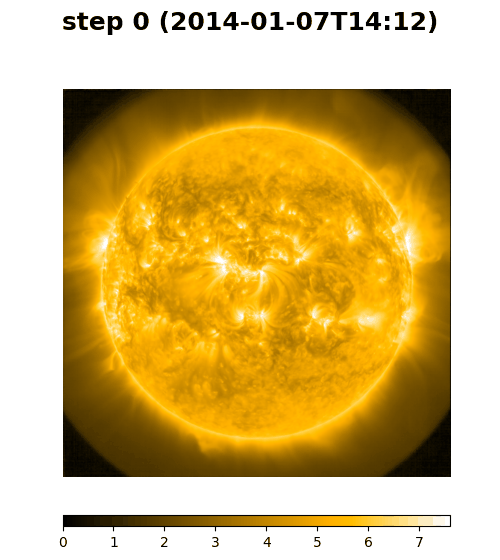

Imagery NASA / SDO · AIA + HMI · 21 Sep 2026
← Back to the systemScroll · how Surya 1.0 read the Sun, and what 2.0 changed
Trained on the full Solar Dynamics Observatory archive — a picture every 12 minutes since 2010, 13 channels, 4096×4096. Long–short transformer with frequency-based attention, scaled on HPC.
Surya 1.0 forecasts the corona and set new marks on flare prediction. Surya 2.0 reads the Sun at native resolution.

1.0 learned the Sun by forecasting it: given the recent frames, predict the next. The rollout above is that model running forward on its own.
Surya 1.0 stacked the eight AIA and five HMI channels into a single 13-channel image, patchified it once, and read the whole disc with a SpectFormer: spectral gating in the early blocks, long–short attention in the rest — a sliding window for fine structure, a compressed long-range path for the global field. Trained to forecast the next frame.
It worked: 366M parameters, the first full-disc foundation model, new marks on flare forecasting.
stack 13 channels → one patch grid → spectral gating → long–short attention → next frame
What the stack costs. Every channel shares one embedding, so 94 Å plasma and an HMI magnetogram are blended before the model sees them. One patch grid over 4096² means coarse tokens or a very long sequence. And a representation learned to forecast is tuned to forecasting.
Each of the 13 channels — eight AIA wavelengths from 94 Å plasma at millions of degrees to the 1600 Å photosphere, five HMI magnetic products — becomes its own modality with its own adapter, patchified at 8×8 on the native 4096² grid. Nothing downsampled, nothing blended. And the pretext changes: not forecasting but reconstruction — hide most of every channel, rebuild all 13.
Why. Channels carry different physics, so they deserve different embeddings. Separate modalities mean any subset works — a task with only AIA, or only HMI, still has a model. Native 8×8 patches keep the small structures that flares begin as: 3,407,872 tokens per snapshot, 13 × (4096 / 8)². And reconstruction, not forecasting, gives one frozen encoder that serves every downstream task — a forecaster you would otherwise have to retrain.
Random Fourier Projection replaces token dropping: a quarter of the patches stay sharp, three quarters become random Fourier views, and the encoder sees the whole context. Sequence- and feature-parallel, FP8, scaling to 1,024 GPUs.
Hide 90% of every channel and the frozen model rebuilds all 13, zero-shot.
13 adapters → patchify 8×8 → 25% kept · 75% RFP → encoder (sequence ∥ feature parallel) → 13-channel decode
Random Fourier Projection keeps the full 3M-token context without dropping tokens; the projected 75% still carry signal. One frozen encoder serves every downstream task.
"It carries the imprint of late nights, stubborn bugs, and weekend experiments."
— on building Surya, NASA Science Data PortalUse any 1, 2… or all 13 channels. No retraining per task.
"Beyond 3 Million Tokens" — a multi-modal foundation model for full-resolution heliophysics. NeurIPS 2026.
UAH · NASA IMPACT · IBM Research · NVIDIA · Edinburgh · Georgia State · Swift